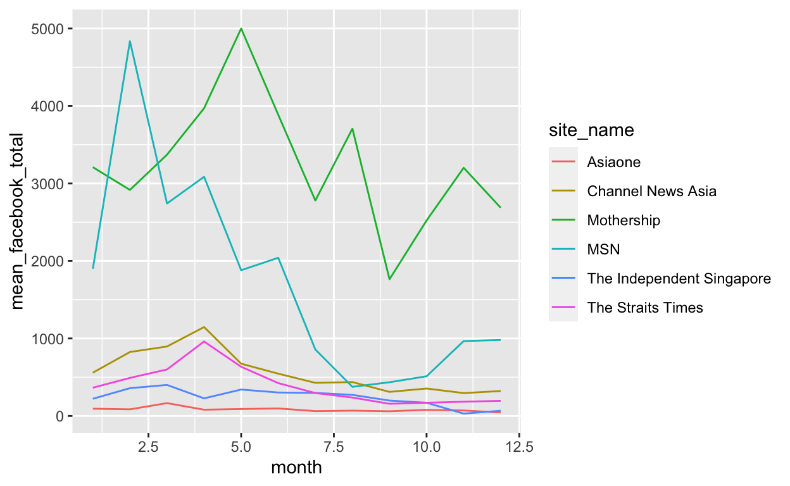
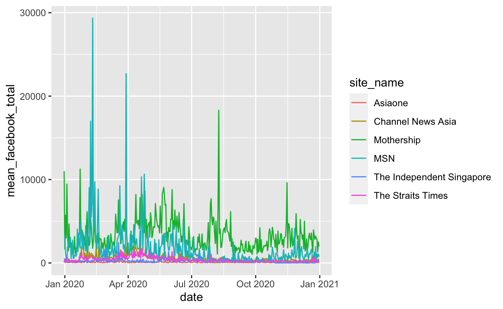
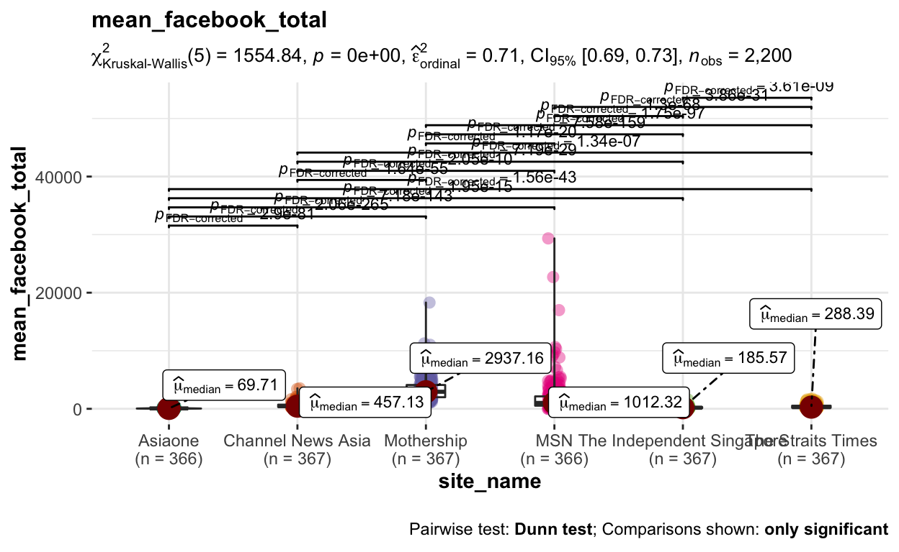
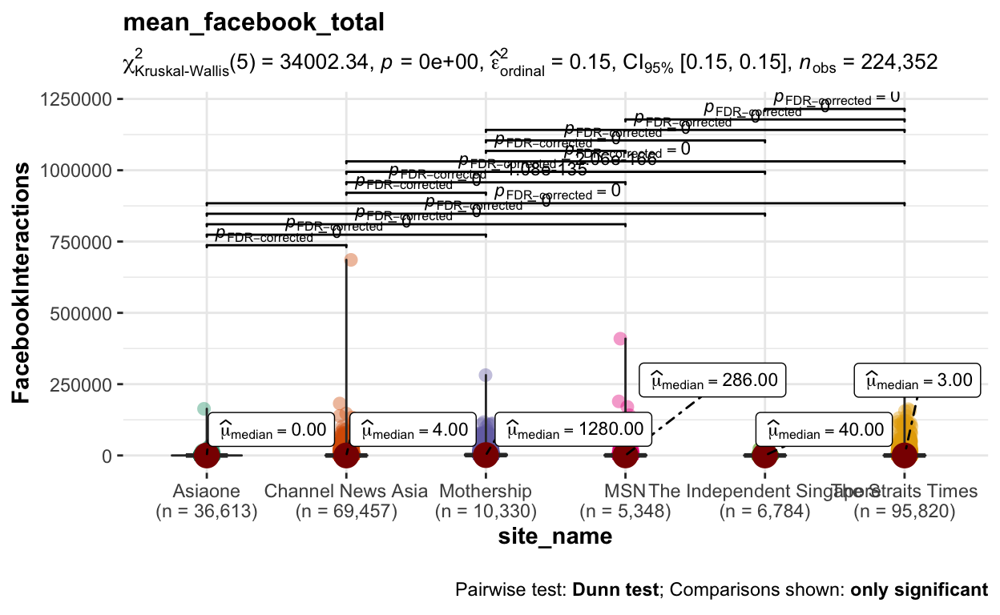
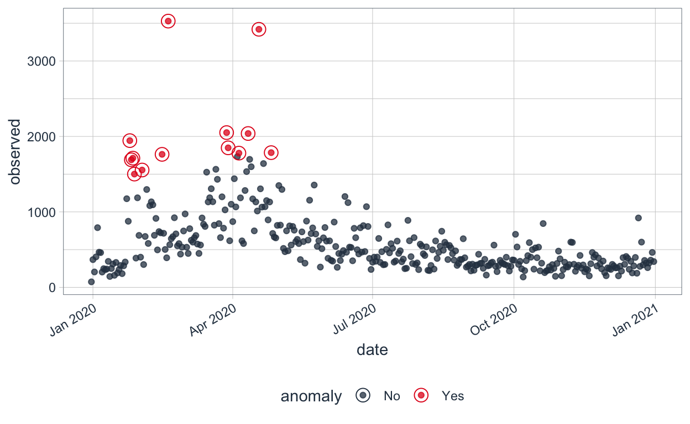
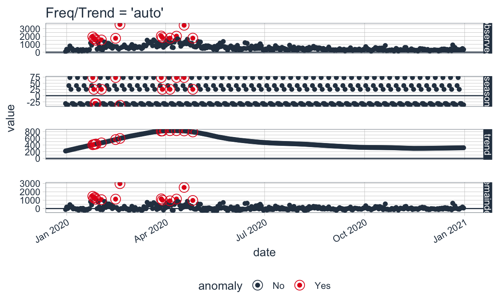
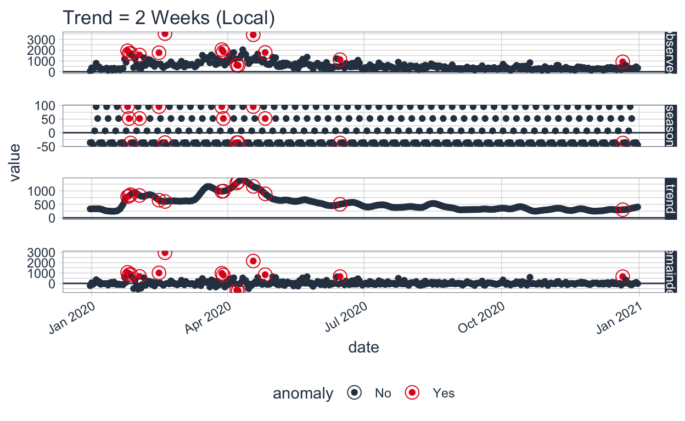
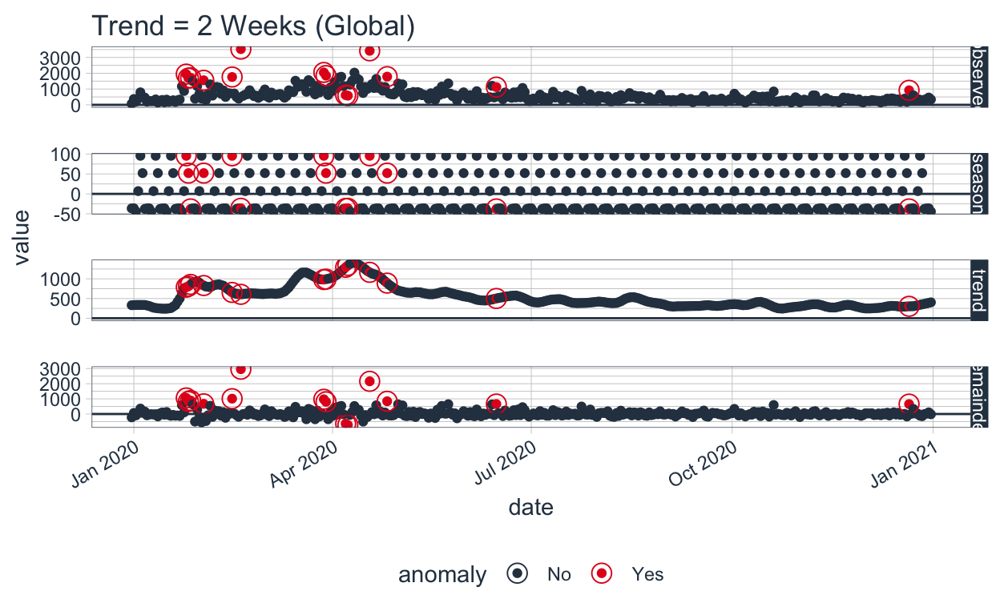
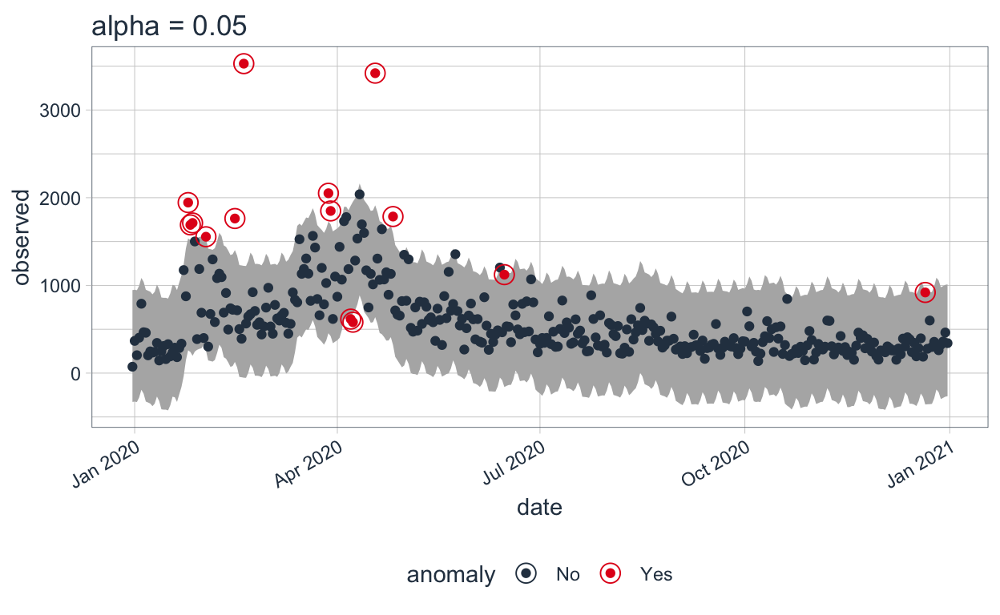
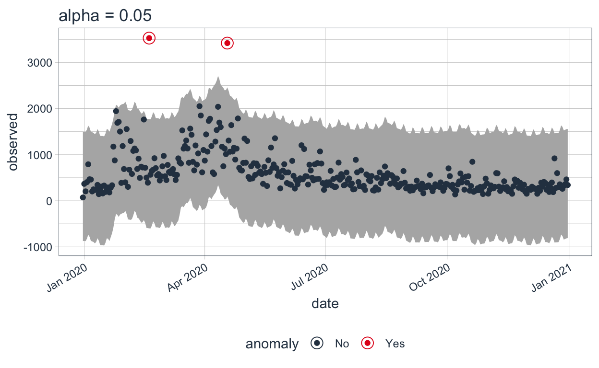

[1] Prepare Dataset
1. Import Library
packages = c('tidyverse', 'readxl', 'dplyr', 'here', 'skimr', 'textdata',
'tm', 'topicmodels', 'tidytext', 'tibble','wordcloud', 'textstem', 'ggstatsplot',
'ggpubr','corrplot','seriation', 'dendextend', 'heatmaply', 'parallelPlot',
'tibbletime', 'anomalize', 'timetk')
for(p in packages){
if(!require(p, character.only = T)){
install.packages(p)
}
library(p, character.only = T)
}
2. Import data file
- Import raw articles (94k), the target for classification
# https://rstudio-conf-2020.github.io/r-for-excel/pivot-tables.html
# To look at summary statistics we’ve used summary, which is good for numeric columns, but it doesn’t give a lot of useful information for non-numeric data. So it means it wouldn’t tell us how many unique sites there are in this dataset. To have a look there I like using the skimr package:
skimr::skim(article_raw)
| Name | article_raw |
| Number of rows | 224352 |
| Number of columns | 10 |
| _______________________ | |
| Column type frequency: | |
| character | 4 |
| numeric | 4 |
| POSIXct | 2 |
| ________________________ | |
| Group variables | None |
Variable type: character
| skim_variable | n_missing | complete_rate | min | max | empty | n_unique | whitespace |
|---|---|---|---|---|---|---|---|
| AM_PM | 0 | 1 | 2 | 2 | 0 | 2 | 0 |
| Headline | 1 | 1 | 2 | 354 | 0 | 213102 | 0 |
| Link | 0 | 1 | 29 | 429 | 0 | 224349 | 0 |
| site_name | 0 | 1 | 3 | 25 | 0 | 6 | 0 |
Variable type: numeric
| skim_variable | n_missing | complete_rate | mean | sd | p0 | p25 | p50 | p75 | p100 | hist |
|---|---|---|---|---|---|---|---|---|---|---|
| FacebookInteractions | 0 | 1 | 553.98 | 3731.67 | 0 | 1 | 4 | 119 | 685790 | ▇▁▁▁▁ |
| FacebookLikes | 0 | 1 | 362.04 | 2485.93 | 0 | 0 | 0 | 75 | 384518 | ▇▁▁▁▁ |
| FacebookShares | 0 | 1 | 108.27 | 783.60 | 0 | 0 | 3 | 22 | 209241 | ▇▁▁▁▁ |
| FacebookComments | 0 | 1 | 83.67 | 633.25 | 0 | 0 | 0 | 12 | 92031 | ▇▁▁▁▁ |
Variable type: POSIXct
| skim_variable | n_missing | complete_rate | min | max | median | n_unique |
|---|---|---|---|---|---|---|
| date | 0 | 1 | 2019-12-31 00:00:00 | 2020-12-31 00:00:00 | 2020-07-01 00:00:00 | 367 |
| Time | 0 | 1 | 1899-12-31 01:00:00 | 1899-12-31 12:59:59 | 1899-12-31 08:10:23 | 42032 |
3. Handling datetime
article_raw$date <- as.Date(article_raw$date)
article_raw$week <- as.numeric(format(as.Date(article_raw$date), "%V"))
article_raw$month <- as.numeric(format(as.Date(article_raw$date), "%m"))
4. Pivot table for whole year by site
5. Pivot table for daily trend analysis
6. Pivot table for monthly trend analysis
7. Visualisation - monthly trend
ggplot(data = article_monthly, aes(x = month, y = no_of_article, color = site_name)) +
geom_line()
ggplot(data = article_monthly, aes(x = month, y = mean_facebook_total, color = site_name)) +
geom_line()

8. Visualisation - daily trend
ggplot(data = article_daily, aes(x = date, y = no_of_article, color = site_name)) +
geom_line()
ggplot(data = article_daily, aes(x = date, y = mean_facebook_total, color = site_name)) +
geom_line()

Analysis
1. daily mean of facebook interaction by media
set.seed(123)
article_media_daily <- article_raw %>%
group_by(site_name,date) %>%
summarise(no_of_article = n(),
mean_facebook_total = mean(FacebookInteractions, na.rm= TRUE),
sum_facebook_total = sum(FacebookInteractions, na.rm= TRUE))
ggbetweenstats(
data = article_media_daily,
x = site_name,
y = mean_facebook_total,
type="np",
mean.ci=TRUE,
pairwise.comparisons = TRUE,
pairwise.display = "s",
p.adjust.method = "fdr",
message=FALSE,
title = "mean_facebook_total"
)

2. facebook interaction by media (individual articles)
set.seed(123)
ggbetweenstats(
data = article_raw,
x = site_name,
y = FacebookInteractions,
type="np",
mean.ci=TRUE,
pairwise.comparisons = TRUE,
pairwise.display = "s",
p.adjust.method = "fdr",
message=FALSE,
title = "mean_facebook_total"
)

Visualisation of trend
p <- ggplot(data = subset(article_raw, site_name == 'Channel News Asia'),
mapping = aes(x = date, y = FacebookInteractions, label = Headline))
p + geom_point() + geom_smooth()
## `geom_smooth()` using method = 'loess' and formula 'y ~ x'
pivot one Media & date
df_tmp <- article_raw %>%
filter(site_name == 'Channel News Asia') %>%
group_by(date) %>%
summarise(no_of_article = n(),
mean_facebook_total = mean(FacebookInteractions, na.rm= TRUE))
df_tmp2 <- df_tmp %>%
select(date, mean_facebook_total)
df_tibble <- as_tibble(df_tmp2)
class(df_tibble)
[1] "tbl_df" "tbl" "data.frame"Using the ‘anomalize’ package
The R ‘anomalize’ package enables a workflow for detecting anomalies in data. The main functions are time_decompose(), anomalize(), and time_recompose().
df_anomalized <- df_tibble %>%
time_decompose(mean_facebook_total, merge = TRUE) %>%
anomalize(remainder) %>%
time_recompose()
df_anomalized %>% glimpse()
Rows: 367
Columns: 11
$ date <date> 2019-12-31, 2020-01-01, 2020-01-02, 202…
$ mean_facebook_total <dbl> 72.95918, 367.42857, 204.14744, 403.6648…
$ observed <dbl> 72.95918, 367.42857, 204.14744, 403.6648…
$ season <dbl> -31.71377, -38.66958, -37.10808, 40.4674…
$ trend <dbl> 220.1812, 227.7678, 235.3545, 242.9412, …
$ remainder <dbl> -115.508222, 178.330308, 5.900996, 120.2…
$ remainder_l1 <dbl> -788.6114, -788.6114, -788.6114, -788.61…
$ remainder_l2 <dbl> 885.5217, 885.5217, 885.5217, 885.5217, …
$ anomaly <chr> "No", "No", "No", "No", "No", "No", "No"…
$ recomposed_l1 <dbl> -600.1440, -599.5131, -590.3650, -505.20…
$ recomposed_l2 <dbl> 1073.989, 1074.620, 1083.768, 1168.930, …Visualize the Anomalies
We can then visualize the anomalies using the plot_anomalies() function.
df_anomalized %>%
plot_anomalies(ncol = 3, alpha_dots = 0.75)

Adjusting Trend and Seasonality
With anomalize, it’s simple to make adjustments because everything is done with a date or DateTime information so you can intuitively select increments by time spans that make sense (e.g. “5 minutes” or “1 month”). First, notice that a frequency and a trend were automatically selected for us. This is by design. The arguments frequency = “auto” and trend = “auto” are the defaults. We can visualize this decomposition using plot_anomaly_decomposition().
p1 <- df_anomalized %>%
plot_anomaly_decomposition() +
ggtitle("Freq/Trend = 'auto'")
p1

When “auto” is used, a get_time_scale_template() is used to determine the logical frequency and trend spans based on the scale of the data. You can uncover the logic:
get_time_scale_template()
# A tibble: 8 x 3
time_scale frequency trend
<chr> <chr> <chr>
1 second 1 hour 12 hours
2 minute 1 day 14 days
3 hour 1 day 1 month
4 day 1 week 3 months
5 week 1 quarter 1 year
6 month 1 year 5 years
7 quarter 1 year 10 years
8 year 5 years 30 yearsThis implies that if the scale is 1 day (meaning the difference between each data point is 1 day), then the frequency will be 7 days (or 1 week) and the trend will be around 90 days (or 3 months). This logic can be easily adjusted in two ways: Local parameter adjustment & Global parameter adjustment.
Adjusting Local Parameters
Local parameter adjustment is performed by tweaking the in-function parameters. Below we adjust trend = “2 weeks” which makes for a quite overfit trend.
p2 <- df_tibble %>%
time_decompose(mean_facebook_total,
frequency = "auto",
trend = "2 weeks") %>%
anomalize(remainder) %>%
plot_anomaly_decomposition() +
ggtitle("Trend = 2 Weeks (Local)")
# Show plots
p1
p2

Adjusting the Global Parameter
We can also adjust globally by using set_time_scale_template() to update the default template to one that we prefer. We’ll change the “3 month” trend to “2 weeks” for time scale = “day”. Use time_scale_template() to retrieve the time scale template that anomalize begins with, mutate() the trend field in the desired location, and use set_time_scale_template() to update the template in the global options. We can retrieve the updated template using get_time_scale_template() to verify the change has been executed properly.
time_scale_template() %>%
mutate(trend = ifelse(time_scale == "day", "2 weeks", trend)) %>%
set_time_scale_template()
get_time_scale_template()
# A tibble: 8 x 3
time_scale frequency trend
<chr> <chr> <chr>
1 second 1 hour 12 hours
2 minute 1 day 14 days
3 hour 1 day 1 month
4 day 1 week 2 weeks
5 week 1 quarter 1 year
6 month 1 year 5 years
7 quarter 1 year 10 years
8 year 5 years 30 yearsp3 <- df_tibble %>%
time_decompose(mean_facebook_total) %>%
anomalize(remainder) %>%
plot_anomaly_decomposition() +
ggtitle("Trend = 2 Weeks (Global)")
p3

Extracting the Anomalous Data Points
Now, we can extract the actual datapoints which are anomalies. For that, the following code can be run.
df_tibble %>%
time_decompose(mean_facebook_total) %>%
anomalize(remainder) %>%
time_recompose() %>%
filter(anomaly == 'Yes')
# A time tibble: 14 x 10
# Index: date
date observed season trend remainder remainder_l1
<date> <dbl> <dbl> <dbl> <dbl> <dbl>
1 2020-01-25 1944. 95.5 787. 1062. -623.
2 2020-01-26 1690. 52.1 812. 826. -623.
3 2020-01-27 1712. -37.7 858. 892. -623.
4 2020-02-02 1555. 52.1 830. 673. -623.
5 2020-02-15 1763. 95.5 655. 1013. -623.
6 2020-02-19 3528. -36.2 607. 2958. -623.
7 2020-03-28 2051. 95.5 982. 973. -623.
8 2020-03-29 1849. 52.1 992. 805. -623.
9 2020-04-07 616. -36.4 1293. -640. -623.
10 2020-04-08 581. -36.2 1339. -722. -623.
11 2020-04-18 3420. 95.5 1165. 2159. -623.
12 2020-04-26 1785. 52.1 892. 841. -623.
13 2020-06-15 1123. -37.7 502. 658. -623.
14 2020-12-21 920. -37.7 303. 655. -623.
# … with 4 more variables: remainder_l2 <dbl>, anomaly <chr>,
# recomposed_l1 <dbl>, recomposed_l2 <dbl>article_raw %>%
filter(site_name == 'Channel News Asia' & date == '2020-03-29') %>%
select(Headline, FacebookInteractions) %>%
arrange(desc(FacebookInteractions))
# A tibble: 96 x 2
Headline FacebookInteracti…
<chr> <dbl>
1 ICA cancels Singaporean's passport for breachin… 52899
2 Singapore reports third death from COVID-19 27678
3 In rare case, US infant dies from COVID-19 22086
4 Daughter of man who died from COVID-19 thanks S… 12565
5 Hospitals turn to snorkel masks to ease respira… 9905
6 COVID-19: Taxi, private-hire car drivers allowe… 6427
7 MOM steps up efforts to disperse gatherings of … 6353
8 Eight killed after medical evacuation plane cra… 5179
9 Parents voice frustration over learning centres… 2460
10 In pictures: Safe distancing in Singapore 2428
# … with 86 more rowsAdjusting Alpha and Max Anoms
The alpha and max_anoms are the two parameters that control the anomalize() function. H
Alpha
We can adjust alpha, which is set to 0.05 by default. By default, the bands just cover the outside of the range.
p4 <- df_tibble %>%
time_decompose(mean_facebook_total) %>%
anomalize(remainder, alpha = 0.05, max_anoms = 0.2) %>%
time_recompose() %>%
plot_anomalies(time_recomposed = TRUE) +
ggtitle("alpha = 0.05")
#> frequency = 7 days
#> trend = 91 days
p4

If we decrease alpha, it increases the bands making it more difficult to be an outlier. Here, you can see that the bands have become twice big in size.
p5 <- df_tibble %>%
time_decompose(mean_facebook_total) %>%
anomalize(remainder, alpha = 0.025, max_anoms = 0.2) %>%
time_recompose() %>%
plot_anomalies(time_recomposed = TRUE) +
ggtitle("alpha = 0.05")
#> frequency = 7 days
#> trend = 91 days
p5

Max Anoms
The max_anoms parameter is used to control the maximum percentage of data that can be an anomaly. Let’s adjust alpha = 0.3 so pretty much anything is an outlier. Now let’s try a comparison between max_anoms = 0.2 (20% anomalies allowed) and max_anoms = 0.05 (5% anomalies allowed).
p6 <- df_tibble %>%
time_decompose(mean_facebook_total) %>%
anomalize(remainder, alpha = 0.3, max_anoms = 0.2) %>%
time_recompose() %>%
plot_anomalies(time_recomposed = TRUE) +
ggtitle("20% Anomalies")
#> frequency = 7 days
#> trend = 91 days
p7 <- df_tibble %>%
time_decompose(mean_facebook_total) %>%
anomalize(remainder, alpha = 0.3, max_anoms = 0.05) %>%
time_recompose() %>%
plot_anomalies(time_recomposed = TRUE) +
ggtitle("5% Anomalies")
#> frequency = 7 days
#> trend = 91 days
p6
p7

Using the ‘timetk’ package
It is a ToolKit for working with Time Series in R, to plot, wrangle, and feature engineer time series data for forecasting and machine learning prediction.
Interactive Anomaly Visualization
Here, timetk’s plot_anomaly_diagnostics() function makes it possible to tweak some of the parameters on the fly.
df_tibble %>% timetk::plot_anomaly_diagnostics(date, mean_facebook_total, .facet_ncol = 2)
Interactive Anomaly Detection
To find the exact data points that are anomalies, we use tk_anomaly_diagnostics() function.
df_tibble %>% timetk::tk_anomaly_diagnostics(date, mean_facebook_total) %>% filter(anomaly=='Yes')
# A tibble: 13 x 11
date observed season trend remainder seasadj remainder_l1
<date> <dbl> <dbl> <dbl> <dbl> <dbl> <dbl>
1 2020-01-25 1944. 73.3 408. 1464. 1871. -793.
2 2020-01-26 1690. 25.4 415. 1250. 1665. -793.
3 2020-01-27 1712. -31.8 422. 1322. 1744. -793.
4 2020-01-28 1501. -31.7 429. 1104. 1533. -793.
5 2020-02-02 1555. 25.4 465. 1065. 1530. -793.
6 2020-02-15 1763. 73.3 563. 1126. 1689. -793.
7 2020-02-19 3528. -38.7 596. 2971. 3567. -793.
8 2020-03-28 2051. 73.3 813. 1164. 1978. -793.
9 2020-03-29 1849. 25.4 817. 1007. 1824. -793.
10 2020-04-05 1779. 25.4 824. 929. 1753. -793.
11 2020-04-11 2039. 73.3 825. 1141. 1965. -793.
12 2020-04-18 3420. 73.3 818. 2528. 3347. -793.
13 2020-04-26 1785. 25.4 789. 971. 1760. -793.
# … with 4 more variables: remainder_l2 <dbl>, anomaly <chr>,
# recomposed_l1 <dbl>, recomposed_l2 <dbl>Conclusion
In this article, we have seen some of the popular packages in R that can be used to identify and visualize anomalies in a time series. To offer some clarity of the anomaly detection techniques in R, we did a case study on a publicly available dataset. There are other methods to detect outliers and those can be explored too.